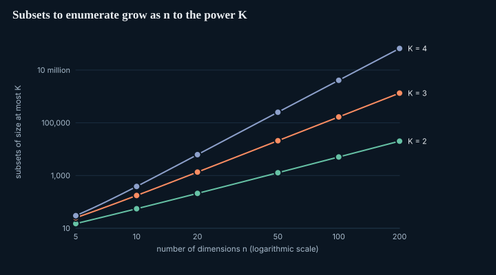
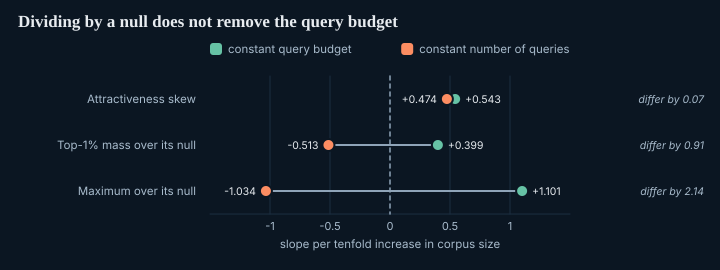

Chapter 17: Scaling to High-Dimensional Spaces
“The trouble with high-dimensional spaces is not that they are large, but that they are empty.” — Paraphrased from Richard Bellman (1961)
The geometric methods developed in Parts I through III operate beautifully in moderate dimensions. When a model has five parameters grouped into five named dimensions, exhaustive subset enumeration (Chapter 11) evaluates 31 subsets, Pareto frontier extraction completes in microseconds, and the Model Robustness Index (Chapter 9) converges with 300 perturbation samples. The entire structural fuzzing campaign finishes in seconds.
Now consider a model with 50 parameters. Or 200. Or 2,000. The number of subsets of size up to $k = 4$ is $\binom{50}{1} + \binom{50}{2} + \binom{50}{3} + \binom{50}{4} = 251{,}175$. For $n = 200$, the same sum exceeds $66$ million. Exhaustive enumeration, which was the foundation of the geometric analysis pipeline, becomes computationally impossible.
This chapter addresses the computational challenges that arise when the methods of preceding chapters encounter high-dimensional parameter spaces. We analyze the complexity of each pipeline stage, identify the bottlenecks, and develop three families of strategies for overcoming them: greedy heuristics that sacrifice optimality for tractability, LASSO-based screening that exploits sparsity, and sampling strategies that provide probabilistic coverage guarantees.
17.1 The Curse of Dimensionality for Geometric Methods
17.1.1 Volume, Distance, and Concentration
The curse of dimensionality is not a single phenomenon but a family of related pathologies. Three are particularly damaging for the geometric methods in this book.
Volume explosion. The fraction of a unit hypercube’s volume within distance $\epsilon$ of the center shrinks as $(2\epsilon)^n$. For $n = 50$ and $\epsilon = 0.1$, this is $0.2^{50} \approx 10^{-35}$. The optimize_subset function in core.py uses 5,000 random samples for subsets of size 3 or more. In 50 dimensions, those samples cover a vanishingly small fraction of the feasible region.
Distance concentration. As $n$ grows, the ratio of maximum to minimum pairwise distance in a random point set converges to 1. All points become approximately equidistant, undermining nearest-neighbor methods and distance-based analysis. Section 17.11 takes up what happens to nearest neighbours in real embedding data, which is not a random point set.
Empty neighborhoods. For MRI computation (Chapter 9), 300 perturbation samples in 50 dimensions are scattered across an exponentially larger space. The MRI’s percentile statistics—P75 and P95—remain well-defined but may not capture the true tail behavior of the perturbation response surface.
17.1.2 What Breaks and When
Not all pipeline stages suffer equally:
| Pipeline Stage | Complexity | Breaks At | Reason |
|---|---|---|---|
| Subset enumeration | $O\bigl(\sum_{k=1}^{K}\binom{n}{k}\bigr)$ | $n \approx 20$ | Combinatorial explosion |
| Per-subset optimization (1D/2D) | $O(g)$ / $O(g^2)$ | Never | Fixed grid cost |
| Per-subset optimization (3D+) | $O(r)$ | $n \approx 50$ | Random search coverage degrades |
| Pareto frontier extraction | $O(m \cdot n)$ | $m > 10^6$ | Dominance checks |
| Sensitivity profiling | $O(n)$ | $n \approx 500$ | Linear, well-behaved |
| MRI computation | $O(p \cdot n)$ | $n \approx 500$ | Perturbation coverage degrades |
| Adversarial threshold search | $O(n \cdot s)$ | $n \approx 500$ | Linear, well-behaved |
| Forward/backward selection | $O(n^2)$ | $n \approx 200$ | Quadratic greedy iterations |
Here $g$ is n_grid (default 20), $r$ is n_random (default 5,000), $m$ the total subset count, $p$ is n_perturbations (default 300), and $s$ is the number of search steps per dimension. The critical bottleneck is subset enumeration—exponential where everything else is polynomial.
17.2 Combinatorial Explosion in Subset Enumeration
The enumerate_subsets function in core.py iterates over all subsets of dimensions from size 1 to max_dims, calling optimize_subset on each via itertools.combinations. The total number of subsets is:
$$S(n, K) = \sum_{k=1}^{K} \binom{n}{k}$$
For small $K$ this is $O(n^K)$. Concrete counts:
| $n$ | $K = 2$ | $K = 3$ | $K = 4$ | $K = n$ (full) |
|---|---|---|---|---|
| 5 | 15 | 25 | 30 | 31 |
| 10 | 55 | 175 | 385 | 1,023 |
| 20 | 210 | 1,350 | 6,195 | $\approx 10^6$ |
| 50 | 1,275 | 20,875 | 251,175 | $\approx 10^{15}$ |
| 100 | 5,050 | 166,750 | 4,087,975 | $\approx 10^{30}$ |
| 200 | 20,100 | 1,333,500 | 66,018,450 | $\approx 10^{60}$ |
The raw subset count understates the true cost because each subset must be optimized. The optimize_subset function uses grid search ($g$ or $g^2$ evaluations) for 1D/2D subsets and random search ($r$ evaluations) for 3D+. For $n = 50$ and $K = 4$ with $g = 20, r = 5{,}000$, the total is about $1.25 \times 10^9$ function evaluations.

Figure 17.1. The number of subsets of at most K dimensions out of n, the sum S(n, K) of Section 17.2, computed from that formula and drawn on logarithmic axes. The marked points are at the values of n the section tabulates. Each curve approaches a straight line of slope K, which is growth as n to the power K: going from 20 to 200 dimensions multiplies the count by about 100 for K = 2 and by about 10,000 for K = 4. Each of those subsets still has to be optimized.
17.3 Greedy Alternatives
17.3.1 Forward Selection
Forward selection builds a subset incrementally, starting empty and greedily adding the dimension that most reduces MAE. From baselines.py:
def forward_selection(
dim_names, evaluate_fn, max_dims=None,
inactive_value=1e6, n_grid=20, n_random=5000,
) -> list[SubsetResult]:
n_all = len(dim_names)
if max_dims is None:
max_dims = n_all
selected, remaining = [], list(range(n_all))
results = []
for _ in range(min(max_dims, n_all)):
best_mae, best_dim, best_result = float("inf"), remaining[0], None
for candidate in remaining:
result = optimize_subset(
active_dims=selected + [candidate],
all_dim_names=dim_names, evaluate_fn=evaluate_fn,
inactive_value=inactive_value,
n_grid=n_grid, n_random=n_random,
)
if result.mae < best_mae:
best_mae, best_dim, best_result = result.mae, candidate, result
selected.append(best_dim)
remaining.remove(best_dim)
results.append(best_result)
return results
At step $t$, it evaluates $n - t$ candidates. Total optimize_subset calls for $K$ steps: $F(n, K) = Kn - K(K-1)/2$, which is $O(nK)$—linear in $n$ for fixed $K$.
| $n$ | Exhaustive ($K = 4$) | Forward ($K = 4$) | Speedup |
|---|---|---|---|
| 20 | 6,195 | 74 | 84x |
| 50 | 251,175 | 194 | 1,295x |
| 100 | 4,087,975 | 394 | 10,376x |
| 200 | 66,018,450 | 794 | 83,147x |
Forward selection cannot discover dimensions that are mediocre alone but excellent in combination. But empirically, it typically finds configurations within 5–15% of the globally optimal MAE.
17.3.2 Backward Elimination
Backward elimination starts with all $n$ dimensions active and greedily removes the least important one at each step. From baselines.py:
def backward_elimination(
dim_names, evaluate_fn,
inactive_value=1e6, n_grid=20, n_random=5000,
) -> list[SubsetResult]:
n_all = len(dim_names)
active = list(range(n_all))
results = []
full_result = optimize_subset(
active_dims=active, all_dim_names=dim_names,
evaluate_fn=evaluate_fn, inactive_value=inactive_value,
n_grid=n_grid, n_random=n_random,
)
results.append(full_result)
while len(active) > 1:
best_mae, worst_dim, best_result = float("inf"), active[0], None
for candidate in active:
trial_dims = [d for d in active if d != candidate]
result = optimize_subset(
active_dims=trial_dims, all_dim_names=dim_names,
evaluate_fn=evaluate_fn, inactive_value=inactive_value,
n_grid=n_grid, n_random=n_random,
)
if result.mae < best_mae:
best_mae, worst_dim, best_result = result.mae, candidate, result
active.remove(worst_dim)
results.append(best_result)
return results
The total calls are $B(n) = n(n-1)/2 + 1$, the same $O(n^2)$ as forward selection run to completion. However, backward elimination has higher per-call cost because early steps involve large subsets (triggering the expensive random search path in optimize_subset).
Complementary strengths. Forward selection excels at identifying the most important dimensions; backward elimination excels at identifying the least important. Running both and comparing results is a practical diagnostic: agreement suggests clean dimension structure; divergence suggests complex interactions.
17.3.3 Bidirectional and Floating Selection
More sophisticated variants exist. Bidirectional selection alternates forward and backward steps: add the best remaining dimension, then check whether any previously selected dimension has become redundant. Floating selection (SFFS/SBFS) allows the subset size to fluctuate, backing up when a backward step improves the objective. These methods escape some local optima that trap pure greedy search while maintaining $O(n^2)$ worst-case complexity.
17.4 LASSO-Based Dimension Screening
17.4.1 Sparsity as a Proxy for Subset Selection
Instead of selecting dimensions explicitly, the LASSO approach solves a continuous relaxation: optimize over all dimensions simultaneously with an $L^1$ penalty that encourages sparsity:
$$\mathcal{L}_\alpha(\theta) = \mathcal{L}(\theta) + \alpha \sum_{i=1}^{n} |\log_{10}(\theta_i)|$$
The penalty is applied in log-space, penalizing deviation from $\theta_i = 1.0$ (the neutral value). The lasso_selection function in baselines.py sweeps over 20 logarithmically spaced regularization strengths $\alpha \in [10^{-3}, 10^2]$. For each $\alpha$, it searches $r = 5{,}000$ random parameter vectors and identifies the best penalized solution. Dimensions with $|\log_{10}(\theta_i)| \geq 0.5$ are considered active.
The total cost is $O(|\alpha| \cdot r)$ function evaluations—$100{,}000$ by default, independent of $n$. This makes LASSO screening particularly attractive for high-dimensional problems.
17.4.2 LASSO as a Screening Stage
The most effective use is as a screening stage that reduces the effective dimensionality before enumeration begins. The workflow is:
- Run
lasso_selectionon the full $n$-dimensional problem. Cost: $O(r \cdot |\alpha|)$. - Identify dimensions that appear in active sets across multiple $\alpha$ values. These are the robust dimensions that survive regularization at various penalty strengths.
- Restrict attention to this reduced set of $n' \ll n$ dimensions.
- Run
enumerate_subsetson the reduced set with $n'$ dimensions. Cost: $O(n'^K)$.
If LASSO reduces $n = 200$ to $n' = 12$, exhaustive enumeration with $K = 4$ requires only $\binom{12}{1} + \binom{12}{2} + \binom{12}{3} + \binom{12}{4} = 793$ subsets—a reduction from 66 million to under a thousand. The screening stage costs 100,000 evaluations; the enumeration stage costs a few thousand more. The total cost is a tiny fraction of naive exhaustive enumeration.
The risk is that LASSO screening may discard a dimension that is individually weak but critical in combination with others. This risk is partially mitigated by using a generous activity threshold ($|\log_{10}(\theta_i)| \geq 0.3$ instead of $0.5$) and by examining the LASSO path across all $\alpha$ values rather than relying on a single regularization strength. Dimensions that appear in the active set for any $\alpha$ value should be retained for the enumeration stage.
17.5 Sampling Strategies for High-Dimensional Perturbation Spaces
17.5.1 The MRI Sampling Problem
The MRI (Chapter 9) draws perturbation samples from a log-normal distribution. With $p = 300$ samples in $n = 50$ dimensions, the samples are too sparse to reveal the fine structure of the perturbation response surface. Three strategies improve coverage.
17.5.2 Latin Hypercube Sampling
LHS partitions each dimension’s marginal distribution into $p$ equal-probability strata, ensuring each stratum is sampled exactly once. The resulting sample has better space-filling properties than independent sampling, providing approximately $1 + (1/p)$ variance reduction. For MRI, the modification replaces the independent normal draws with stratified draws via scipy.stats.qmc.LatinHypercube, transformed through the inverse normal CDF.
17.5.3 Quasi-Random Sequences
Sobol and Halton sequences provide deterministic, low-discrepancy point sets. The Koksma–Hlawka inequality bounds integration error at $O((\log p)^n / p)$, tighter than random sampling’s $O(1/\sqrt{p})$ when $n$ is moderate. Quasi-random sequences are most useful for $n < 40$; beyond this, a hybrid approach—Sobol for the most important dimensions, random for the rest—works well.
17.5.4 Importance Sampling Along Sensitive Dimensions
Sensitivity profiling identifies which dimensions most influence MAE. Scaling perturbation variance by sensitivity rank concentrates samples where they matter:
importance = np.array([sr.delta_mae for sr in sensitivity_results])
importance = importance / importance.sum()
adaptive_scale = scale * (1.0 + importance * n_dims)
for _ in range(n_perturbations):
noise = rng.normal(0.0, adaptive_scale)
params_pert = params * np.exp(noise)
This reduces MRI estimate variance by focusing on the dimensions that drive tail behavior.
17.6 Approximation Strategies for Pareto Frontiers
17.6.1 Streaming Pareto Maintenance
The pareto_frontier function in pareto.py handles the two-objective case (dimensionality vs. MAE) efficiently by grouping results by dimensionality, keeping the best MAE at each level, and sweeping through in $O(m)$ time (Chapter 8). The challenge arises when we want Pareto analysis over more than two objectives—say, (dimensionality, MAE, MRI)—or when the number of candidates $m$ is in the millions.
Instead of collecting all results and computing the frontier post hoc, maintain the frontier incrementally as results arrive. Each new result is checked for dominance against the current frontier (not against all prior results). If it is not dominated, it is added, and any frontier members it now dominates are removed. The cost per insertion is $O(|F|)$ where $|F|$ is the frontier size, typically much smaller than $m$.
For a frontier of size 20 (typical in practice), each insertion requires 20 dominance checks regardless of how many total results have been processed. Over $m$ insertions, the total cost is $O(m \cdot |F|)$ rather than $O(m^2)$.
17.6.2 Epsilon-Dominance for Frontier Compression
In high-dimensional objective spaces, the exact Pareto frontier can itself grow large. Epsilon-dominance provides principled compression: a solution $\mathbf{x}$ $\epsilon$-dominates $\mathbf{y}$ if $x_i \leq (1 + \epsilon) \cdot y_i$ for all objectives $i$. The $\epsilon$-Pareto frontier contains at most $O((1/\epsilon)^{d_{\text{obj}}})$ points, where $d_{\text{obj}}$ is the number of objectives. For $\epsilon = 0.05$ (5% tolerance) and 3 objectives, this bounds the frontier at 8,000 points—manageable regardless of how many candidates are evaluated.
17.7 Computational Complexity of the Full Pipeline
The run_campaign function in pipeline.py executes six stages plus optional baselines. With $E$ denoting the cost per evaluate_fn call:
| Stage | Cost (evaluations) | Notes |
|---|---|---|
| Subset enumeration | $\sum_{k=1}^{K}\binom{n}{k} \cdot c(k)$ | $c(k) = g, g^2, r$ for $k = 1, 2, \geq 3$ |
| Pareto extraction | $O(m)$, no evaluations | In-memory computation |
| Sensitivity profiling | $O(n)$ | One ablation per dimension |
| MRI computation | $O(p)$ | Independent of $n$ |
| Adversarial search | $O(n \cdot s)$ | Log-spaced scan per dimension |
| Compositional test | $O(n^2) \cdot c_{\text{avg}}$ | Greedy build order |
| Forward selection | $O(nK) \cdot c_{\text{avg}}$ | |
| Backward elimination | $O(n^2) \cdot c_{\text{avg}}$ |
Estimated wall-clock times for $E = 1$ms, $g = 20$, $r = 5{,}000$, $p = 300$, $K = 4$:
| $n$ | Enumeration | Other stages | Total |
|---|---|---|---|
| 5 | 79s | 32s | 112s |
| 10 | 28min | 3.1min | 31min |
| 20 | 8.3hr | 14min | 8.6hr |
| 50 | 347hr | 1.6hr | 349hr |
| 100 | 5,671hr | 6.8hr | 5,678hr |
| 200 | 91,667hr | 27hr | 91,694hr |
Subset enumeration is the bottleneck, becoming intractable between $n = 20$ and $n = 50$.
17.8 Parallelization Opportunities
17.8.1 Embarrassingly Parallel Stages
Subset enumeration. Each optimize_subset call is independent. Subsets can be partitioned across $P$ workers, reducing wall-clock time by approximately $P$:
from concurrent.futures import ProcessPoolExecutor
def parallel_enumerate_subsets(dim_names, evaluate_fn, max_dims=4, n_workers=None, **kwargs):
all_combos = []
for k in range(1, min(max_dims, len(dim_names)) + 1):
all_combos.extend(itertools.combinations(range(len(dim_names)), k))
def evaluate_combo(combo):
return optimize_subset(active_dims=combo, all_dim_names=dim_names,
evaluate_fn=evaluate_fn, **kwargs)
with ProcessPoolExecutor(max_workers=n_workers) as executor:
results = list(executor.map(evaluate_combo, all_combos))
results.sort(key=lambda r: r.mae)
return results
MRI computation. Perturbation samples can be precomputed and distributed. Adversarial search. Each dimension’s search is independent.
17.8.2 Sequential Stages with Inner Parallelism
Forward selection, backward elimination, and the compositional test are sequential across steps but parallel within each step. At step $t$ of forward selection, the $n - t$ candidate evaluations can run simultaneously.
17.8.3 GPU Acceleration
When the evaluation function is GPU-accelerated, perturbation evaluations can be batched. Instead of $p$ sequential evaluations, construct batches of $B$ perturbed parameter vectors and evaluate them in a single kernel launch, reducing the number of launches from 300 to $\lceil 300/B \rceil$.
17.9 Memory-Efficient Implementations
17.9.1 The Memory Problem
enumerate_subsets stores all results in a list. Each SubsetResult contains a full parameter vector of shape $(n,)$. For $n = 100$ and $K = 4$, the list holds about 4.1 million results consuming approximately 4 GB. For $n = 200$, memory exceeds 60 GB.
17.9.2 Streaming Evaluation
Most downstream analysis needs only the top-$M$ results by MAE and the Pareto frontier. A streaming implementation maintains a bounded priority queue and a streaming Pareto frontier, reducing memory from $O(m)$ to $O(M + |F|)$—constant regardless of $n$.
17.9.3 Compressed Parameter Storage
Since inactive dimensions share the sentinel value 1e6, a SubsetResult with $k$ active dimensions out of $n$ total carries $n - k$ redundant values. Storing only active dimension indices and values reduces per-result storage from $O(n)$ to $O(k)$:
@dataclass
class CompactSubsetResult:
dims: tuple[int, ...]
dim_names: tuple[str, ...]
active_values: tuple[float, ...] # Only active dimension values
mae: float
def to_full_params(self, n_all, inactive_value=1e6):
params = np.full(n_all, inactive_value)
for dim, val in zip(self.dims, self.active_values):
params[dim] = val
return params
For $K = 2$ subsets with $n = 200$, this is a 100x compression.
17.10 When to Use Exact Methods vs. Approximations
17.10.1 The Decision Framework
The choice between exact enumeration and approximate methods is not purely a function of $n$. It depends on three factors:
-
Evaluation cost $E$. If each function evaluation takes 1 microsecond (as in a simple closed-form model), exhaustive enumeration with $n = 30$ and $K = 4$ requires 31,930 subsets, each costing at most 5,000 evaluations, for a total wall-clock time under 3 minutes. But if each evaluation takes 1 second (as in a simulation-based model), the same campaign requires about 43,750 hours, roughly five years.
-
Dimension interaction strength. If dimensions contribute independently to MAE, forward selection finds the optimal subset with high probability, and exhaustive enumeration provides little additional value. If dimensions interact strongly (synergies, redundancies, suppression effects), exhaustive enumeration is the only way to discover optimal combinations.
-
Tolerance for suboptimality. In exploratory analysis, finding a configuration within 10% of optimal is often sufficient. In production deployment, where the selected configuration will run for months, the cost of finding the true optimum may be justified.
17.10.2 Diagnostic Tests for Interaction Strength
Before committing to exhaustive enumeration, estimate interaction strength:
- Run forward selection to obtain the greedy ordering $d_1, \ldots, d_K$.
- For each pair $(d_i, d_j)$, compute $\Delta_{ij} = \text{MAE}(\{d_i, d_j\}) - \min(\text{MAE}(\{d_i\}), \text{MAE}(\{d_j\}))$.
- Compute the interaction ratio $R = \max_{i,j} |\Delta_{ij}| / \text{MAE}(\{d_1\})$.
If $R < 0.05$, interactions are weak and greedy methods suffice. If $R > 0.2$, interactions are strong and more thorough search is warranted.
17.10.3 The Decision Matrix
| Condition | Recommended Strategy |
|---|---|
| $n \leq 15$, any $E$ | Exhaustive enumeration |
| $15 < n \leq 50$, $E < 1$ms | Exhaustive with $K \leq 3$ |
| $15 < n \leq 50$, $E > 1$ms | LASSO screening + reduced enumeration |
| $50 < n \leq 200$, weak interactions | Forward + backward selection |
| $50 < n \leq 200$, strong interactions | LASSO screening + reduced enumeration |
| $n > 200$ | LASSO screening + forward selection only |
The pipeline supports this through max_subset_dims:
report = run_campaign(
dim_names=dim_names,
evaluate_fn=evaluate_fn,
max_subset_dims=2, # Only enumerate pairs
run_baselines=True, # Greedy methods for higher orders
n_mri_perturbations=500, # Increase for high dimensions
)
17.10.4 A High-Dimensional Campaign
Consider $n = 80$ parameters with 50ms evaluation cost. Naive enumeration with $K = 4$ would require about 13 years. The recommended approach:
# Phase 1: LASSO screening (100,000 evals = 83 min)
lasso_results = lasso_selection(dim_names=dim_names, evaluate_fn=evaluate_fn)
# Identify robust dimensions (active across multiple alpha values)
from collections import Counter
dim_counts = Counter()
for result in lasso_results:
for d in result.dims:
dim_counts[d] += 1
threshold = 0.3 * len(lasso_results)
screened_dims = [d for d, c in dim_counts.items() if c >= threshold]
# Phase 2: Exhaustive enumeration on reduced set (~12 dims, ~40 min)
reduced_results = enumerate_subsets(
dim_names=[dim_names[d] for d in screened_dims],
evaluate_fn=make_reduced_fn(evaluate_fn, screened_dims),
max_dims=4,
)
# Phase 3: MRI + adversarial testing on top configurations (~10 min)
Total: 2–3 hours instead of about 13 years.
17.11 Neighbourhood Statistics in High Dimension: Intrinsic Dimension and Hubness
The sections above scale the parameter space. The same curse appears in the data space whenever the points are learned embeddings with hundreds or thousands of coordinates and the method depends on nearest neighbours, as the Mahalanobis, hyperbolic and topological methods of Part I all do. Section 17.1.1 stated distance concentration for a random point set. Real embeddings are not a random point set, and two statistics describe how they differ: the intrinsic dimension of a neighbourhood and the hubness of the nearest-neighbour graph.
This section defines both, gives the estimators, and then reports what happened when they were used as acceptance gates in a long measurement campaign. The lesson of that campaign is that both statistics depend on the measurement protocol far more than their definitions suggest, and that a number quoted without its protocol is not a statistic.
Epistemic status. The measurements in this section come from the
openvector-benchrepository (result files named below). The main corpus is 1024-dimensional Cohere Embed-V3 embeddings of Wikipedia passages. The intrinsic-dimension profile was repeated on three further corpora; the hubness results were measured on the Wikipedia corpus only. None of it is peer reviewed. The identities are checked symbolically informal/matlab/ch17_neighbourhood_stats.m.
17.11.1 Intrinsic Dimension by the Two-Nearest-Neighbour Estimator
Let $r_1(x) \le r_2(x)$ be the distances from a point $x$ to its first and second nearest neighbours, and let $\mu = r_2 / r_1$. If the density is locally uniform on a $d$-dimensional manifold, the ratio is Pareto distributed with shape $d$, whatever the density is (Facco et al., 2017):
$$\Pr(\mu > t) = t^{-d}, \qquad t \ge 1. \tag{17.1}$$
So $\ln \mu$ is exponential with rate $d$, and the maximum-likelihood estimate from $N$ points is
$$\hat d = \frac{N}{\sum_{i=1}^{N} \ln \mu_i}. \tag{17.2}$$
The estimator uses only the two nearest neighbours, so it reads the dimension at the scale of the sampling density. That is its strength and the source of everything that follows.
Trimming changes the level. Large ratios come from outliers and from boundaries between clusters, so implementations discard them. The campaign’s estimator keeps the ratios below their empirical quantile $q = 0.9$ and then applies (17.2) to what is left:
def id_twonn(d: np.ndarray) -> float:
"""Facco two-NN MLE, trimmed at the 90th percentile of mu."""
r1, r2 = d[:, 0], d[:, 1]
mu = r2[r1 > 0] / np.maximum(r1[r1 > 0], 1e-12)
mu = mu[mu > 1.0]
if len(mu) < 100:
return float("nan")
mu = mu[mu <= np.quantile(mu, 0.9)]
return float(len(mu) / np.sum(np.log(mu)))
Applying the untruncated formula to a truncated sample is not neutral. For an exponential variable with rate $d$ cut at its $q$-quantile, the mean is $\frac{1}{d}\bigl(1 + \frac{(1-q)\ln(1-q)}{q}\bigr)$, so on data that satisfy (17.1) exactly the trimmed estimator converges to
$$\hat d_q \;\to\; \frac{d}{1 + \dfrac{(1-q)\ln(1-q)}{q}}, \qquad \hat d_{0.9} \to 1.344\, d. \tag{17.3}$$
The factor is the same for every corpus measured with the same code, so ratios between corpora are unaffected. Levels are not comparable with an untrimmed two-NN value, or with the original procedure of Facco et al., which fits a line to the trimmed empirical distribution and has no such factor. Every level quoted below is a $q = 0.9$ trimmed value.
The right nominal dimension does not give the right measured dimension. The campaign tested whether a low-dimensional manifold is enough to imitate real embeddings. At $n = 16{,}000$ points in 1024 ambient dimensions, with the same estimator on each row (results/EC_FALSIFICATION.md):
| Point set | Nominal dimension | Measured $\hat d$ | Ratio to real |
|---|---|---|---|
| Real embeddings (Wikipedia, Embed-V3) | unknown | 61.4 | 1.00 |
| Flat torus, uniform density | 52 | 345 | 5.63 |
| Isotropic Gaussian | 1024 | 325 | 5.29 |
A flat 52-dimensional torus, uniformly sampled, reads like the Gaussian. The reason is a count: $16{,}000^{1/52} \approx 1.2$ points per dimension. Every neighbourhood is so sparsely filled that the two nearest neighbours of a point are, in effect, random directions in the ambient space. The real corpus reads 61 at the same $n$ because its mass is concentrated: it sits in clusters dense enough that the two nearest neighbours of a point lie on its own local patch. A later family built as a mixture of flat linear patches, each in its own random subspace, matched the real value to within 0.95 to 1.14 times (results/GEN_ROUND3_CONCENTRATION.md). A flat patch has infinite reach in the sense of the Niyogi–Smale–Weinberger condition quoted in Chapter 5, so a sparse sample of it still reads its true dimension. Low nominal dimension is not what makes real embeddings distinctive. Inhomogeneity is.
The value depends on how many points there are and on who is asking. The same corpus does not have one intrinsic dimension. Two protocols were run on four corpora (results/R107_REPLICATION.md). In the first, the reference points are a uniform random hold-out of the corpus itself, so they are exchangeable with the points they search. In the second, they are rows taken from far outside the sampled region of a topically ordered collection.
| Corpus (encoder) | $\hat d$, uniform hold-out, $n = 25{,}000 \to 200{,}000$ | Distant rows over uniform hold-out, $n = 100{,}000$ |
|---|---|---|
| Wikipedia (Cohere Embed-V3) | $26.9 \to 18.3$ | 3.01 |
| MS MARCO (Cohere Embed-V3) | $18.7 \to 14.9$ | 3.46 |
| DBpedia (OpenAI ada-002) | $33.2 \to 26.4$ | 1.29 |
| DBpedia (OpenAI text-embedding-3-large) | $34.9 \to 26.5$ | 0.97 |
Two things are visible. The estimate falls as the sample gets denser, in all four corpora and all three encoders, because a denser sample resolves a finer and lower-dimensional scale. And reference points drawn from a different region of a large ordered collection see about three times the dimension that exchangeable points see, an effect that vanishes on the two smaller collections that have no distant region. The value 61.4 in the previous table was measured with real search queries, which are of the second kind.
So an intrinsic dimension is reported with four things attached: the number of points, the encoder, the corpus, and the rule that chose the reference points. Without them two values cannot be compared.
17.11.2 Hubness and the Query Budget
Search a set of $n$ points with $n_q$ queries, returning $k$ neighbours each. The $k$-occurrence $N_k(x)$ is the number of queries that return $x$. In high dimension its distribution becomes strongly right-skewed: a few points, the hubs, are returned for a large share of queries, and many points are never returned (Radovanović et al., 2010). The standard measure of hubness is the skewness
$$S_k = \frac{\mathbb{E}\bigl[(N_k - \bar N_k)^3\bigr]}{\operatorname{Var}(N_k)^{3/2}}. \tag{17.4}$$
Hubs matter to every method in this book that takes a neighbourhood as its input. A hub appears in many neighbourhoods and an anti-hub in none, so local estimates are dominated by a few points.
The budget. The mean of $N_k$ is fixed by the experiment and not by the data:
$$\rho = \frac{n_q\, k}{n}. \tag{17.5}$$
We call $\rho$ the query budget. It is the number of retrieval slots per point.
The null is not zero. Suppose the corpus has no hub structure at all, so every point is equally likely to be returned. Then $N_k$ is close to Poisson with mean $\rho$, whose skewness is
$$S_k^{\text{null}} = \frac{1}{\sqrt{\rho}}. \tag{17.6}$$
A structureless corpus therefore shows positive hubness, and shows more of it as the budget falls. On the real corpus, with $n_q = 10{,}000$ held fixed while $n$ grows (spec/QUERY_BUDGET.md):
| $n$ | 25,000 | 50,000 | 100,000 | 200,000 |
|---|---|---|---|---|
| $\rho$ at $k = 10$ | 4 | 2 | 1 | 0.5 |
| $S_{10}$ over its null | 3.19 | 2.14 | 1.58 | 1.27 |
| $S_{30}$ over its null | 6.05 | 4.01 | 2.66 | 1.85 |
| $S_{100}$ over its null | 11.07 | 7.95 | 5.34 | 3.54 |
In the last cell at $k = 10$ the measured skewness is 1.79 against a null of 1.41. About four fifths of that reading is the null. A gate that compares two corpora on $S_k$ in that cell compares two numbers pinned near the same floor, and it passes almost anything.
Removing the budget. Give each point an attractiveness $w \ge 0$ with mean one, the rate at which the query distribution selects it, and model its count as $N_k \mid w \sim \text{Poisson}(\rho w)$. Then
$$\operatorname{Var}(N_k) = \rho + \rho^2 \operatorname{Var}(w), \tag{17.7}$$
$$\mu_3(N_k) = \rho + 3\rho^2 \operatorname{Var}(w) + \rho^3 \mu_3(w), \tag{17.8}$$
where $\mu_3$ is the third central moment. Both moments of $w$ can be solved for:
$$\operatorname{Var}(w) = \frac{\operatorname{Var}(N_k) - \rho}{\rho^2}, \qquad \mu_3(w) = \frac{\mu_3(N_k) - 3\operatorname{Var}(N_k) + 2\rho}{\rho^3}. \tag{17.9}$$
The attractiveness skew $\mu_3(w)/\operatorname{Var}(w)^{3/2}$ belongs to the corpus and the query distribution and does not contain $\rho$. From openvector_bench/hubness.py:
def attractiveness_skew(counts: np.ndarray) -> float:
c = np.asarray(counts, dtype=np.float64)
rho = float(c.mean())
if rho <= 0:
return float("nan")
var_w = (float(c.var()) - rho) / rho**2
if var_w <= 1e-9:
return float("nan")
mu3_w = (float(((c - rho) ** 3).mean()) - rho - 3 * rho**2 * var_w) / rho**3
return float(mu3_w / var_w**1.5)
On a fixed corpus with a known attractiveness skew of 9.85, measured at $\rho \in \{0.5, 1, 2, 4\}$, the raw $S_k$ ranged from 2.46 to 5.59 while the deconvolved estimate stayed between 9.84 and 10.02. The function returns no value when the measured variance is at or below $\rho$, which is the correct answer when the budget is too small to resolve any structure.
Dividing by a null is not the same as removing it. Two simpler corrections were tried first: the largest count divided by the largest count a Poisson sample would reach, and the mass of the busiest one percent divided by its Poisson expectation. Both were believed to be free of the budget. They were then measured on the same rows, code and seeds under two protocols, one holding $\rho$ constant as $n$ grew and one holding $n_q$ constant. The slope of each statistic per tenfold increase in $n$, at $k = 10$:
| Statistic | Constant $\rho$ | Constant $n_q$ | Difference |
|---|---|---|---|
| Attractiveness skew | $+0.543$ | $+0.474$ | 0.07 |
| Top-1% mass over its null | $+0.399$ | $-0.513$ | 0.91 |
| Maximum over its null | $+1.101$ | $-1.034$ | 2.14 |
The two ratio statistics change sign with the protocol. Dividing by a null removes its location but not its shape: the distribution of a maximum, or of a tail mass, changes form with occupancy, so its ratio to its own expectation still moves with the budget. Only the estimator that models the sampling and inverts it gave the same answer twice.
An invariant estimator does not protect against a biased sample. The agreement in the first row was read as showing that the hubness of the real corpus rises with $n$ at about $+0.5$ per decade. It does not show that. The script behind all three measurements drew its corpus and its queries from different files of a topically ordered dataset, so the queries came from a shifted distribution. When the same rows were shuffled before the split, the slope was $+0.26 \pm 0.20$, against $+0.48 \pm 0.17$ with the original split, on six seeds; an independent measurement inside a single file gave $-0.10 \pm 0.13$ (results/R14_TARGETS_SPLIT_CHECK.md). The invariance result stands, because the split was the same under both protocols. The claim about the corpus does not. Three measurements that agree and share one sampling rule are one measurement.
Hubs are made by the queries. Which points become hubs? The campaign described each point by eight features: seven of local geometry (density, three neighbour radii, the slope of radius with rank, local intrinsic dimension, anisotropy) and one of query exposure, the amount of query mass near the point. A partition of the points built from all eight carried at most 1.20 times the information about retrieval counts that a partition built from query exposure alone carried, at twelve cells and on held-out points (results/R13_STAGE1_RESULT.md). Local geometry adds little once query exposure is known. Consistent with this, real queries against the corpus gave an attractiveness skew of 6.36 where queries drawn from the corpus’s own distribution gave 2.51 in a matched cell.
The lower tail depends on the budget as well. The share of points never returned at $k = 10$ was 26.5% at $\rho = 3.34$, 55.2% at $\rho = 1.25$ and 75.9% at $\rho = 0.50$. At the highest budget, half of the never-returned points were ones that no query had come near. A count of anti-hubs taken at one budget is partly a count of unasked questions.

Figure 17.2. Slope of three hubness statistics per tenfold increase in corpus size, at k = 10, under two protocols that differ only in whether the query budget or the number of queries is held constant (table of Section 17.11.2). The two statistics formed by dividing by a null change sign with the protocol. The attractiveness skew, which models the sampling and inverts it, gives nearly the same slope twice. The values are measurements from the openvector-bench campaign, not peer reviewed. The comparison between protocols stands, but the slopes are not a property of the corpus: queries and corpus came from different files, and the claim that hubness rises with corpus size was withdrawn.
17.11.3 Rules for Practice
- Report the budget. Every count statistic is quoted with $\rho$ from (17.5).
- Compare across corpus sizes in the deconvolved form. Use the attractiveness skew of (17.9) for any claim that crosses $n$. Raw skewness, maxima and their ratios to a null are for comparisons at one matched $\rho$.
- Keep $\rho \ge 2$ where a decision depends on the count. Below that the null dominates every statistic, whatever its form. At $k = 10$ this needs $n_q \ge 0.2\, n$.
- Make queries and corpus exchangeable unless the shift is the object of study. Permute before splitting. If the queries are meant to differ from the corpus, say so, because that difference will be most of the hubness.
- Quote an intrinsic dimension with its protocol. State the number of points, the encoder, the corpus, the trimming and the rule that chose the reference points.
- Test invariance by measurement. Before calling a statistic independent of a nuisance quantity, measure it under two protocols that differ only in that quantity. An argument that the correction ought to work was wrong twice in this campaign.
Rule 6 holds an instrument to the standard this book holds a model to: a property is accepted after it survives a test that could have refuted it.
17.12 Limitations and Open Problems
Several challenges remain unresolved in the current framework.
Neighbourhood statistics on other corpora. The hubness results of Section 17.11.2 were measured on one corpus and one encoder. The dependence on query exposure has not been tested where queries and corpus share a distribution by construction, and the attractiveness skew has high variance on heavy-tailed corpora, where the third moment is carried by a few points.
Non-linear dimension interactions. LASSO screening assesses dimensions individually via the $L^1$ penalty on each parameter. Dimensions whose importance emerges only through three-way or higher-order interactions may be incorrectly screened out. Developing screening methods that detect higher-order interactions without exhaustive search is an open problem in both the structural fuzzing framework and the broader feature selection literature.
Non-stationary evaluation costs. The cost model in Section 17.7 assumes that each evaluation has fixed cost $E$. In practice, evaluation cost may depend on the parameter values—some configurations cause the model to converge slowly or trigger expensive fallback computations. Adaptive budget allocation must account for this variance, potentially using multi-armed bandit strategies to estimate per-configuration cost online.
Theoretical guarantees. Forward selection provides an approximation ratio for submodular objectives, but the MAE-minimization objective in structural fuzzing is generally not submodular. Establishing theoretical guarantees for the approximation quality of greedy methods in this setting requires either proving submodularity under additional assumptions or developing alternative theoretical frameworks.
Distributed evaluation. For very high-dimensional problems ($n > 1{,}000$), even the $O(n^2)$ methods become slow. Distributed evaluation across a cluster introduces communication overhead, fault tolerance concerns, and load balancing challenges that are beyond the scope of this chapter but arise immediately in practice.
17.13 Connection to Chapter 18
This chapter addressed scaling in the dimension of the parameter space—what happens when the model has many parameters and the geometric methods of earlier chapters encounter computational limits. The strategies developed here—LASSO screening, greedy alternatives, streaming evaluation, adaptive budget allocation—are each effective in isolation, but their true power emerges when they are composed into coherent workflows.
Chapter 18 turns to exactly this challenge: composing geometric analyses into pipelines with conditional branching, iterative refinement, and feedback loops between stages. The linear six-stage chain in run_campaign is a starting point; Chapter 18 develops more sophisticated compositions where the output of LASSO screening determines whether to run exhaustive or greedy enumeration, where MRI results trigger additional adversarial testing on fragile configurations, and where the entire pipeline can be re-run with adapted parameters when initial results reveal unexpected structure. The scaling strategies of this chapter become building blocks in that larger architecture.
Summary
High-dimensional parameter spaces challenge every stage of the structural fuzzing pipeline, but the challenges are unequal. Subset enumeration is the critical bottleneck, growing as $O(n^K)$ and becoming intractable for $n > 20$ at $K = 4$. Three families of strategies address this:
- Greedy methods (forward selection, backward elimination) reduce cost from $O(n^K)$ to $O(n^2)$ while typically finding configurations within 5–15% of the global optimum.
- LASSO screening reduces effective dimensionality from $n$ to $n' \ll n$ at cost independent of $n$, enabling exhaustive enumeration on the reduced set.
- Sampling strategies (Latin hypercube, quasi-random sequences, importance sampling) improve coverage of high-dimensional perturbation spaces for MRI and robustness analysis.
High dimension also changes the data space. The intrinsic dimension and the hubness of a point set are both functions of the measurement protocol: the first of the sample size and of who chooses the reference points, the second of the query budget and the query distribution. Section 17.11 gives the estimators, a budget-free form of hubness, and six reporting rules.
The remaining pipeline stages—Pareto extraction, sensitivity profiling, MRI, adversarial search—are polynomial in $n$ and scale gracefully. Streaming evaluation and compressed storage prevent memory from becoming a bottleneck. The central engineering principle is adaptive strategy selection: use exact methods when feasible, screen aggressively when necessary, and validate approximations by comparing greedy results against partial enumeration on a reduced dimension set.